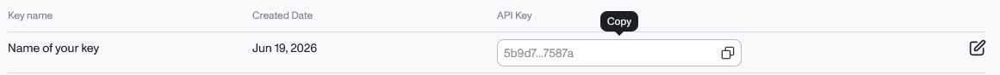
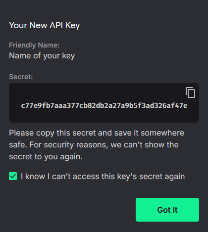
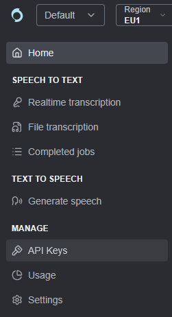

Fournisseurs de transcription
AssemblyAI
Utilisé pour : transcription avec timing par mot.
- Créez un compte (e-mail ou SSO) sur https://www.assemblyai.com/dashboard/signup. Sans carte bancaire,
vous obtenez environ 50 $ de crédits, soit 330 heures.

- Une fois votre e-mail vérifié, ouvrez Manage ▸ API Keys.

- Copiez la Default API Key, ou cliquez sur Create new API key pour une clé dédiée.

- Nommez la nouvelle clé, par exemple
SubVoxPro, puis cliquez sur Create.
- Copiez la clé depuis sa ligne.

- Collez-la dans Settings ▸ AssemblyAI.
L’offre gratuite est limitée à deux projets et deux clés. Aide officielle.
Gladia
Utilisé pour : transcription.
- Inscrivez-vous sur https://app.gladia.io, par e-mail ou avec Google.

- Ouvrez API Keys dans la barre latérale.

- Créez si besoin une clé dédiée, avec un nom facile à reconnaître comme
SubVoxPro. Copiez tout de suite sa valeur complète : la liste n’en montre ensuite parfois qu’une partie.
Copiez tout de suite sa valeur complète : la liste n’en montre ensuite parfois qu’une partie.

- Collez-la dans Settings ▸ Gladia.
Offre gratuite : 10 h par mois, 20 appels par heure et 3 en parallèle au maximum. Aide.
Deepgram
Utilisé pour : transcription.
- Créez un compte sur https://console.deepgram.com/signup, sans carte bancaire. Le crédit offert de 200 $
expire un an après l’inscription.

- Ouvrez API Keys dans la console.

- Cliquez sur Create a New API Key.

- Nommez la clé et choisissez sa durée de validité avec Set expiration ; SubVox Pro n’impose rien.

- Copiez le secret et rangez-le en lieu sûr : Deepgram ne pourra plus l’afficher.

- Collez-le dans Settings ▸ Deepgram.
Speechmatics
Utilisé pour : transcription.
- Créez un compte sur https://portal.speechmatics.com : 100 $ de crédit offerts une fois, sans carte bancaire.

- Ouvrez Manage ▸ API Keys dans le projet.

- Cliquez sur Create new key.

- Nommez-la puis cliquez sur Generate new key.

- Copiez la clé avant de fermer la fenêtre : elle ne sera plus affichée.

- Collez-la dans Settings ▸ Speechmatics.
ElevenLabs
Utilisé pour : transcription Scribe et doublage TTS.
- Inscrivez-vous sur https://elevenlabs.io (e-mail ou SSO), sans carte bancaire. L’offre gratuite donne environ
10 minutes par mois, pour un usage non commercial et à condition de créditer ElevenLabs. Doubler un jeu publié nécessite une
offre payante.

- Ouvrez Developers, la section qui regroupe API, journaux, webhooks et variables d’environnement.

- Ouvrez API Keys puis Create Key.

- Nommez la clé. Avec Restrict Key, mettez Speech to Text et Text to Speech sur Access.


- Copiez la valeur avant de fermer : la clé complète ne s’affiche qu’une fois.

- Collez-la dans Settings ▸ ElevenLabs. La même clé sert à la transcription et au doublage.
L’API TTS utilise l’en-tête
xi-api-keyetPOST /v1/text-to-speech/:voice_id. Référence.
Rev AI
Utilisé pour : transcription.
- Créez un compte sur https://www.rev.ai/auth/signup, sans carte bancaire : 5 h de crédit sont offertes.

- Ouvrez Access Token, dans le menu ou sur https://www.rev.ai/access_token.

- Cliquez sur Generate si vous n’avez pas encore de token (deux au maximum peuvent être actifs).

- Copiez tout de suite la valeur complète, qui ne s’affiche qu’une fois : la liste n’en garde ensuite qu’un aperçu.

- Collez-le dans Settings ▸ Rev AI.